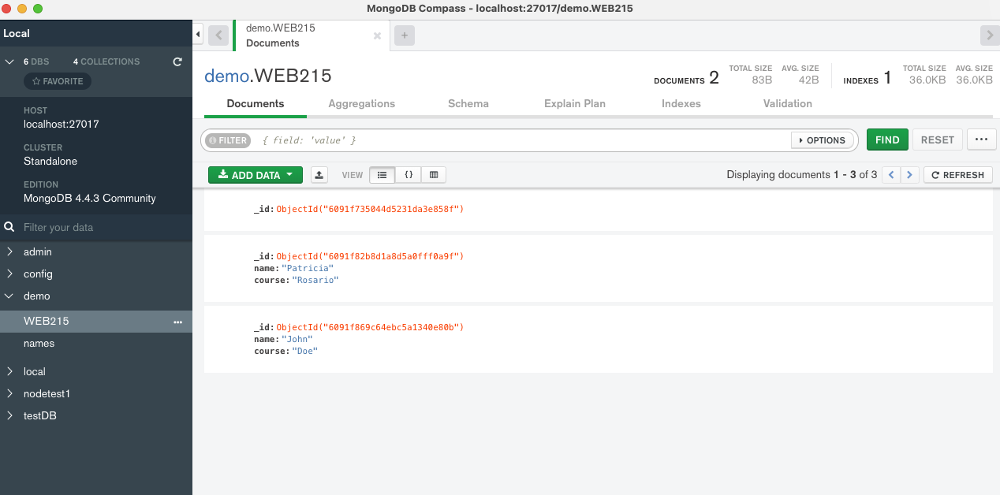
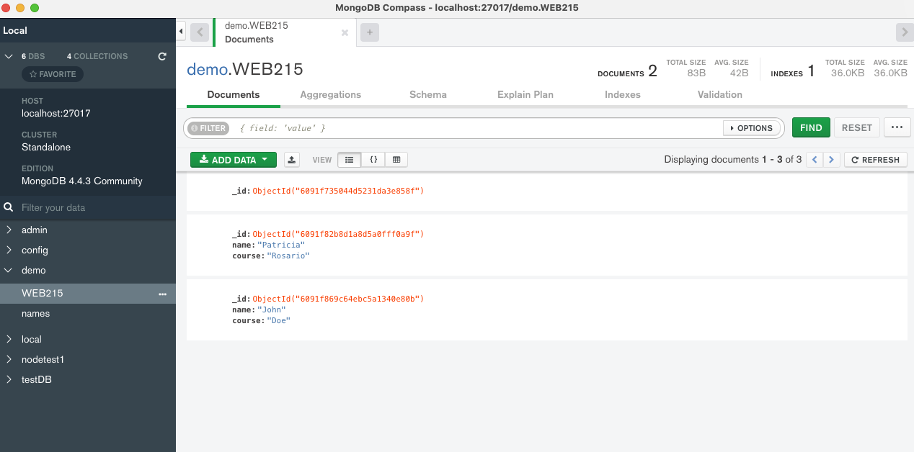

MongoDB
I've created a database collection demo.WEB215 where I stored the data inserted from my Javascript. Also, to verify that the data was inserted there's a console.log to confirm that the process went smooth.
I've created a database collection demo.WEB215 where I stored the data inserted from my Javascript. Also, to verify that the data was inserted there's a console.log to confirm that the process went smooth.
